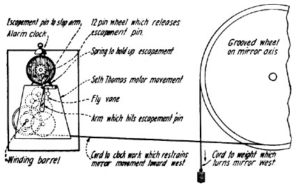

The Method of Regulating the Mirror Is Indicated In the Drawing At the Left. An Alarm Clock With a Twelve-Pin Wheel Releases An Escapement Pin Secured To a- Motor Movement. The Weight Turns the Mirror To the West a Fixed Distance Every Five Minutes.